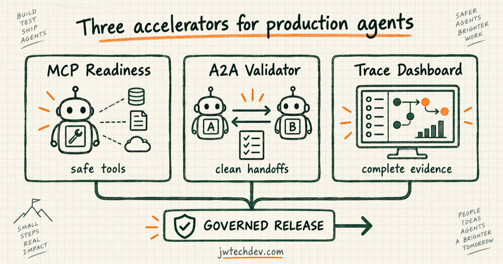

Three accelerators every production agent platform needs
Three small building blocks can remove a surprising amount of production risk: an MCP readiness pack, an A2A handoff validator, and a trace completeness dashboard.

Quick answer
Before building a giant control plane, create three opinionated checks: can the tool surface be used safely, can agents hand work to each other without losing context, and can operators reconstruct what happened?
1. MCP readiness pack
Check protocol-version handling, stateless compatibility, authentication, tenant boundaries, tool allowlists, read and write permissions, schema validation, idempotency, error behavior, trace propagation, and legacy-client support.
The output should be a machine-readable profile plus a human review summary. Treat publish and destructive tools as separate risk classes, not normal variations of read access.
2. A2A handoff validator
Validate the task goal, constraints, evidence references, allowed data, delegated permissions, expected return shape, status model, artifact references, trace identity, budget, and deadline.
A handoff should fail early when required context is missing. Silent improvisation between agents is not resilience.
3. Trace completeness dashboard
Measure whether each workflow captured identity, agent version, model, tool, target, approval, status, duration, cost, errors, and artifact links. A dashboard should highlight missing evidence, not merely display colorful spans.
Make completeness a percentage with explicit required fields by risk class.
How they become a release gate
Run the readiness pack when a tool server changes. Run the handoff validator in contract tests. Run trace-completeness checks during evaluation and in production sampling. Block promotion when a required threshold fails.
That turns governance from a slide into executable delivery infrastructure.
Sources checked
Want the starter kit?
Build the cloud fundamentals behind safer agent systems.
Get resources